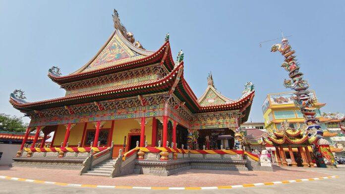
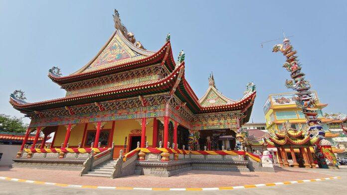

กำหนดการงานวันการศึกษาเอกชน ภาคกลาง ครั้งที่ 10 ประจำปี 2569
ภายใต้แนวคิด "สายน้ำสองสมุทร รุดหน้าการศึกษา สร้างสรรค์พัฒนา คุณค่าที่ยั่งยืน"
โรงแรม แกรนด์ อินเตอร์ โฮเทล ณ จังหวัดสมุทรสาคร
วันที่ 13 กุมภาพันธ์ 2569


 


16.00-18.00 น.
พักผ่อนตามอัธยาศัย
18.00-18.30 น.
"รายงานตัวเข้างานเลี้ยง สายน้ำสองสมุทร"
● รับฟังการบรรเลงดนตรีจากโรงเรียนเอกชนนอกระบบจังหวัดสมุทรสาครจากโรงเรียนดนตรีโซนาต้า
● ศึกษาธิการจังหวัดสมุทรสาคร กล้าวต้อนรับแขกผู้มีเกียรติ
● ชมการแสดงของนักเรียนโรงเรียนเอกชนจังหวัดสมุทรสาคร
ชุดที่ 1 ชื่อชุดการแสดง สรรเสริญภูผามนตรา
● ชมการแสดงของนักเรียนโรงเรียนเอกชนจังหวัดสมุทรสาคร
ชุดที่ 1 : สรรเสริญภูผามนตรา
● ชมการแสดงของนักเรียนโรงเรียนเอกชนนอกระบบจังหวัดสมุทรสงคราม
ชุดที่ 1 : Thai Modern Massage
ชุดที่ 2 : Thai Sappaya Massage
● รับฟังการบรรเลงดนตรีจากโรงเรียนดนตรีโซนาต้า โรงเรียนเอกชนนอกระบบจังหวัดสมุทรสาคร
21.00 น.